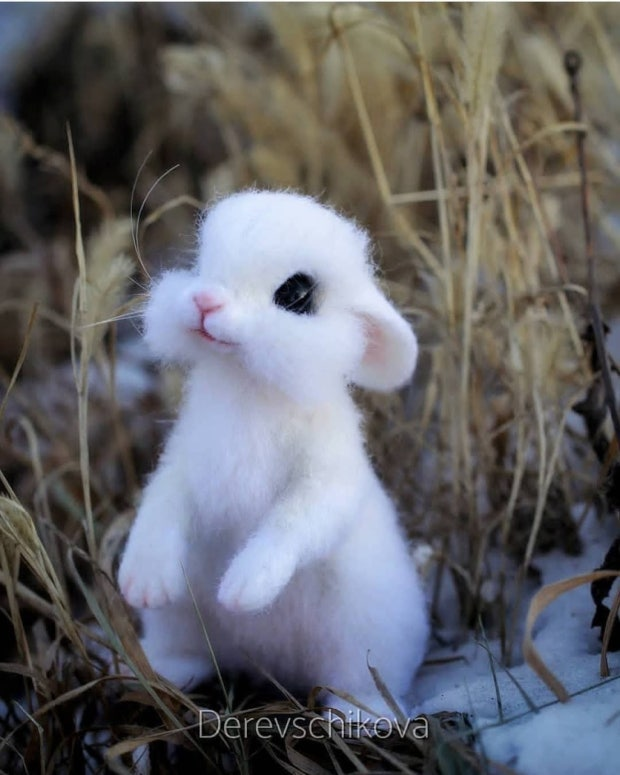
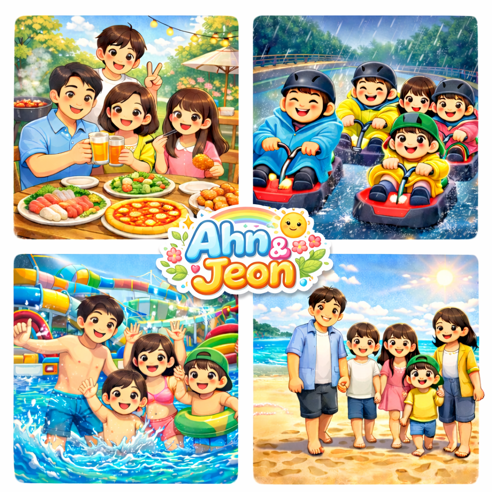

Freelance Instructor
안녕하세요! 쿨한 척하지만
사실은 마음 따뜻한 안앤전입니다.
👩🏫 About Me
저는 아이들과 학생들에게 기초 코딩부터 4차 산업 관련 진로 체험을 안내하는 길잡이 역할을 하고 있습니다. 미래를 살아갈 아이들에게 꼭 필요한 디지털 리터러시를 쉽고 흥미롭게 전달하는 데 푹 빠져 있어요.
저의 업무 스타일은요?
솔직히 고백하자면 평소엔 '귀차니즘'이 꽤 있는 편입니다. 하지만! 막상 프로젝트가 주어지면 저도 모르게 스위치가 켜지며 '나름 완벽주의자' 모드로 변신합니다.
제 가장 큰 무기는 한 번에 여러 가지 일을 엄청난 속도로 쳐내는 멀티태스킹 능력이에요. 복잡한 일들도 굵직굵직하고 빠르게 해결해 내는 것이 제 특기랍니다.
👨👩👧👦 나의 원동력, Ahn & Jeon

세 아이와 함께하는 매일매일은 시끌벅적한 시트콤 같지만, 이 순간들이 저에게는 가장 큰 에너지를 주는 삶의 비타민입니다.
물놀이, 캠핑, 바다 여행까지! 우리 가족만의 즐거운 추억을 매일매일 그려나가고 있어요.
💖 My Favorites
여행 & 쇼핑
일상을 환기하는 데는 새로운 공간과 약간의 물욕(?)만큼 좋은 게 없죠.
드라마와 한잔
하루를 마치고 시원한 술 한잔 곁들이며 정주행할 때 최고예요.
가수 하동균
작업을 하거나 쉴 때 항상 하동균의 짙은 목소리가 흐릅니다.
알아두면 쓸데없는(?) 안앤전의 비밀
- 😎 프로 '쿨한 척' 러버: 당황스러운 일이 생겨도 속으로는 땀을 뻘뻘 흘릴지언정, 겉으로는 세상에서 제일 평온하고 쿨한 척을 아주 잘한답니다.
- ⚖️ 모순적인 매력: 스스로 '귀차니즘'이 심하다고 말하지만, 막상 관심 있는 일에는 밤을 새워가며 완벽하게 끝내야 직성이 풀리는 성격을 가졌습니다.